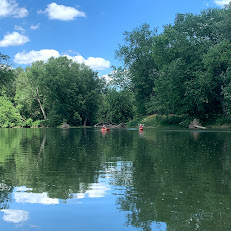
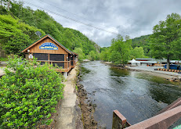
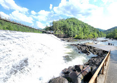

Rivers

White River Canoe Company
Noblesville, Indiana - White River Canoe Co. offers canoe, kayak, and tubing trops on the West Fork of the White River, northeast of Indianapolis.
White River Website

Nantahala Outdoor Center
Bryson City, North Carolina - NOC's locations have long been a meeting place for families and friends, a practice spot for Olympic athletes and aspiring paddlers, a respite for hikers along the Appalachian Trail, and home to decades of alumni and staff.
Nantahala Website

Ocoee Rafting
Ducktown, Tennesee - Located in the Cherokee National Forest, the Ocoee River flows through a beautiful gorge surrounded by scenic wildlife, yet it is within several hours of many major cities in Tennessee, Georgia, Alabama and North Carolina.
Ocoee Website